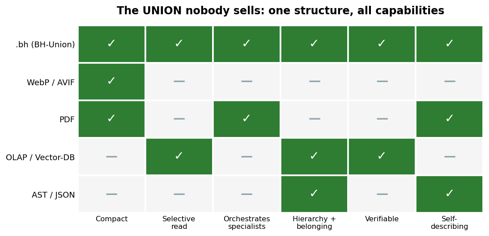
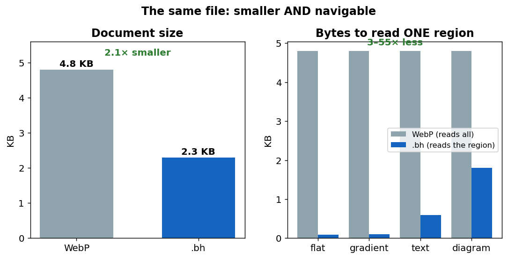
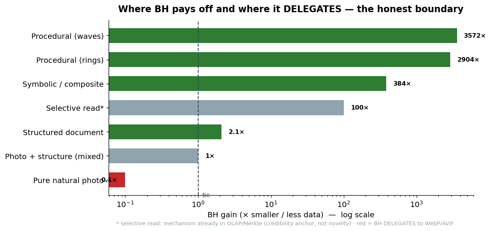
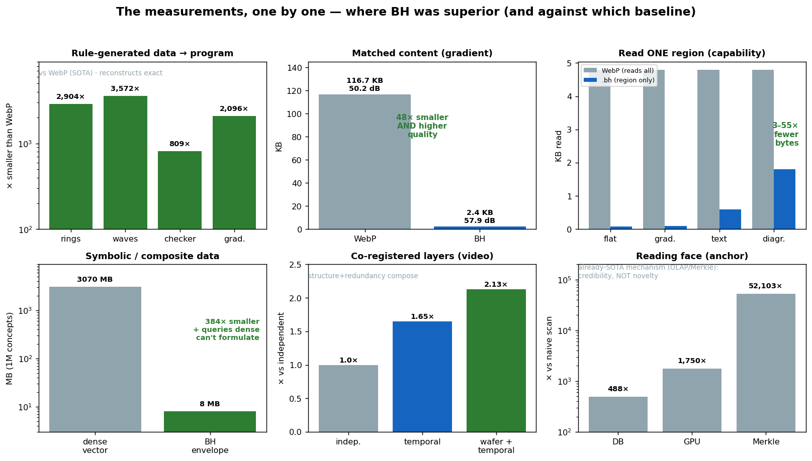

Hierarchical Bits — Visual Pitch (comparative charts)
A structure that represents a heterogeneous asset, navigates parts of it without loading everything, and delegates each region to the best specialist format.
1. The union nobody sells
Every format today covers only one piece. .bh is the only one that unites all
the capabilities in a single structure.

WebP/AVIF → compact, but single reading, no orchestration nor hierarchy
PDF → orchestrates and is self-describing, but a flat list, no selective read
OLAP/V-DB → selective reading and hierarchy, but not a representation format
AST/JSON → explicit structure, but not compact and doesn't orchestrate
.bh → ALL capabilities, in one envelope
2. The same file: smaller AND navigable
It's not "either compact or navigable". It's both, measured against WebP on a structured document.

- 2.1× smaller than WebP (each region in the format that suits it).
- 3–55× fewer bytes to read any region — WebP decodes the entire file for
any piece;
.bhreads only the requested branch.
3. Where it pays off and where it delegates (the honest boundary)
BH is not universal magic. It pays off where the data is structure and delegates where it's dense signal.

STRUCTURE (wins) Procedural 2,904–3,572× · Symbolic 384× ·
Document 2.1×
SELECTIVE READ (anchor) ~100×, but a mechanism that already exists (OLAP/Merkle):
credibility, not novelty
DENSE SIGNAL (delegates) Natural photo: WebP/AVIF wins — BH calls it,
doesn't compete
The boundary is not the signal's entropy — it's structure recognition.
4. The measurements, one by one (where BH was superior, and against what)
Each real test, with the gain and the baseline labeled — visible honesty: green where it wins vs state of the art, gray where it's an anchor (already-SOTA mechanism).

Rule-generated data → program .... 800–3,572× smaller than WebP (reconstructs exact)
Matched content (gradient) ....... 48× smaller than WebP, with HIGHER quality
Reading one region (capability) .. 3–55× fewer bytes than WebP
Symbolic / composite data ........ 384× smaller + queries dense can't even formulate
Co-registered layers (video) ..... 2.13× (structure + redundancy compose)
Reading face (anchor) ............ 488–52,103× vs naive — but it's OLAP/Merkle,
credibility, NOT novelty
The three charts read together
- Chart 1 shows WHAT: a structure that does what today takes four.
- Chart 2 shows the PROOF: smaller AND navigable, in the same file, vs SOTA.
- Chart 3 shows the HONESTY: where it pays off (structure) and where it delegates (signal) — the credibility that makes an engineer trust it.
The value isn't in the compressed block. It's in the structure that knows what that block means.
Charts generated by pitch_assets/generate_charts.py and generate_evidence.py
from the study's real measurements (see BH_MASTER.md). PNGs in
pitch_assets/en/.